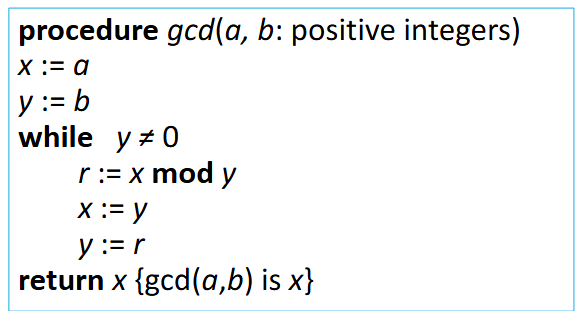

Ch4.The Number Theory and Cryptography¶
4.1 Divisibility and Modular Arithmetic¶
1. Division¶
[Definition]: If \(a\) and \(b\) are integers with \(a \neq 0\), then \(a\) divides \(b\) if there exists an integer \(c\) such that \(b=ac\)
- When \(a\) divides \(b\) we say that \(a\) is a factor or divisor of \(b\) and that \(b\) is a multiple of \(a\).
- The notation \(a \mid b\) denotes that \(a\) divides \(b\).
- If \(a \mid b\) , then \(b/a\) is an integer.
- If \(a\) does not divide \(b\), we write \(a ∤ b\)
Properties of Divisibility¶
Theorem: Let a, b, and c be integers, where \(a ≠ 𝟎\).
- If \(𝑎 \mid 𝑏\) and \(𝑎 \mid 𝑐\) , then \(𝑎 \mid (𝑏 + 𝑐)\)
- If \(𝑎 \mid 𝑏\) , then \(𝑎 \mid 𝑏𝑐\) for all integers \(c\)
- If \(𝑎 \mid 𝑏\) and \(𝑏 \mid 𝑐\), then \(𝑎 \mid 𝑐\)
Corollary: If a, b, and c be integers, where \(a \neq 0\), such that \(𝑎 \mid 𝑏\) and \(𝑎 \mid c\), then \(𝑎 \mid m𝑏+nc\) whenever m and n are integers.
2. Division Algorithm¶
If \(a\) is an integer and \(d\) a positive integer, then there are unique integers \(q\) and \(r\), with \(0 \leq r < d\), such that \(a = dq + r\)
- d is called the divisor 除数
- a is called the dividend 被除数
- q is called the quotient 商 q = a div d
- r is called the remainder 余数(非负) r = a mod d
3. Congruence Relation¶
[Definition] : 若 \(a\) 和 \(b\) 为整数，\(m\) 为正整数，当 m 能整除 \(a − b\) 时，称 \(a\) 与 \(b\) 对模 \(m\) 同余。
- The notation \(a \equiv b \pmod{m}\) says that a is congruent to b modulo m.
- If a is not congruent to b modulo m, we write \(a ≢ b \pmod{m}\)
Theorem: Let \(m\) be a positive integer. The integers \(a\) and \(b\) are congruent modulo \(m\) if and only if there is an integer \(k\) such that \(a = b+km\)
3.1 Congruences of Sums and Products¶
Theorem: Let m be a positive integer. If \(a \equiv b\pmod{m}\) and \(c \equiv d \pmod{m}\), then \(a+c \equiv b+d\pmod{m}\) and \(ac \equiv bd\pmod{m}\)
3.2 Algebraic Manipulation of Congruences¶
在同余式两边同时乘以一个整数后仍然同余
- If \(a \equiv b \pmod{m}\) holds then \(c \cdot a \equiv c \cdot b \pmod{m}\) , where \(c\) is any integer
在同余式两边同时加上一个整数后仍然同余
- If \(a \equiv b \pmod{m}\) holds then \(a+c \equiv b+c \pmod{m}\) , where \(c\) is any integer
在同余式两边同时除以一个整数后同余无法确定
- If \(a \equiv b \pmod{m}\) holds then \(a \div c \equiv b \div c \pmod{m}\) , where \(c\) is any integer
[Corollary] :
- \((a + b) \mod {m} = [(a \mod {m}) + (b \mod {m})] \mod {m}\)
- \(ab \mod {m} = [(a \mod {m})(b \mod {m})] \mod {m}\).
4. Arithmetic Modulo m¶
[Definitions] : Let \(Z_m\) be the set of nonnegative integers less than \(m\): { \(0,1, \dots , m − 1\) }
- The operation +m is defined as \(a+ _mb = (a+b)\mod m\). This is addition modulo m.
- The operation ∙m is defined as \(a ⋅ _mb = (a\cdot b)\mod m\). This is multiplication modulo m.
- Using these operations is said to be doing arithmetic modulo m算术模 m
The operations +m and ·m satisfy many of the same properties as ordinary addition and multiplication.
Closure 封闭性
- If \(a\) and \(b\) belong to \(Z_m\) , then \(a +_m b \in Z_m\) and \(a ·_m b \in Z_m\) .
Associativity 结合律
- If \(a\), \(b\), and \(c\) belong to \(Z_m\) , then \((a +_mb) + _m c = a +_m (b +_m c)\) and \((a ·_m b) ·_m c = a ·_m (b ·_m c)\).
Commutativity 交换律
- If a and b belong to \(Z_m\) , then \(a +_m b = b +_m a\) and \(a ·_m b = b ·_m a\).
Identity elements 单位元
-
The elements \(0\) and \(1\) are identity elements for addition and multiplication modulo \(m\), respectively.
If a belongs to \(Z_m\) , then \(a +_m 0 = a\) and \(a ·_m 1 = a\).
Additive inverses 加法逆元
-
If \(a ≠ 0\) belongs to \(Z_m\) , then \(m − a\) is the additive inverse of a modulo m and 0 is its own additive inverse.
-
\(𝑎 + _𝑚 (𝑚 − 𝑎 ) = 0\) and \(0 +_𝑚 0 = 0\)
Distributivity 分配律
- If a, b, and c belong to \(𝑍_𝑚\) , then \(𝑎 ·_𝑚 (𝑏 +_𝑚 𝑐) = (𝑎· _𝑚 𝑏) + _𝑚 (𝑎 +_𝑚 𝑐)\) and \((𝑎 +_𝑚 𝑏) ·_𝑚 𝑐 = (𝑎 ·_𝑚 𝑐) +_𝑚 (𝑏·_𝑚 𝑐)\)
4.3 Primes and Greatest Common Divisors¶
1. Primes¶
[Definition] : A positive integer p greater than \(1\) is called prime if the only positive factors of \(p\) are \(1\) and \(p\). A positive integer that is greater than \(1\) and is not prime素数 is called composite合数
Theorem: There are infinitely many primes. (Euclid) 素数的无限性
[Definition] : Prime numbers of the form \(2^p − 1\), where \(p\) is prime, are called Mersenne primes梅森数
2. The Fundamental Theorem of Arithmetic¶
Theorem 1: Every positive integer greater than 1 can be written uniquely as a prime or as the product of two or more primes where the prime factors are written in order of nondecreasing size.
Theorem 2: If n is a composite integer, then n has a prime divisor less than or equal to \(\sqrt n\)
若 n 为合数，则 n 必有一个质因数小于或等于\(\sqrt n\)
3. The Sieve of Eratosthenes¶
The Sieve of Eratosthenes can be used to find all primes not exceeding a specified positive integer n.
方法：找出所有不超过 n 的质数，然后从小到大依次将它们的倍数 ( 不超过 n ) 删去，剩下的数就是不超过 n 的质数。
For example, \(n=100\) Begin with the list of integers between 1 and 100.
① Delete all the integers, other than 2, divisible by 2.
② Delete all the integers, other than 3, divisible by 3.
③ Next, delete all the integers, other than 5, divisible by 5.
④ Next, delete all the integers, other than 7, divisible by 7.
⑤ Since all the remaining integers are not divisible by any of the previous integers, other than 1, the primes are: \(\{2,3,5,7,11,15,17,19,23,29,31,37,41,43,47,53,59,61,67,71,73,79,83,89,97\}\)
4. 素数的分布¶
Prime Number Theorem:
The ratio of the number of primes not exceeding \(x\) and \(x/lnx\) approaches \(1\) as \(x\) grows without bound.
5. Greatest Common Divisor¶
[Definition] : Let \(a\) and \(b\) be integers, not both zero. The largest integer \(d\) such that \(d \mid a\) and also \(d \mid b\) is called the greatest common divisor of \(a\) and \(b\). The greatest common divisor of a and b is denoted by \(\gcd{(a,b)}\)
[Definition] : The integers \(a\) and \(b\) are relatively prime if their greatest common divisor is \(1\)
6. Least Common Multiple¶
[Definition] : The least common multiple of the positive integers \(a\) and \(b\) is the smallest positive integer that is divisible by both a and b. It is denoted by \(\text{lcm}(a,b)\)
[Theorem] : Let a and b be positive integers. Then \(ab = \gcd{(a, b)} \cdot \text{lcm}(a, b)\)
7. Euclidean Algorithm¶
The Euclidian algorithm is an efficient method for computing the greatest common divisor of two integers.
- let \(a=bq+r\), then \(\gcd(a,b) = \gcd(b,r)\)

8. gcds as Linear Combinations¶
裴蜀定理 Bézout’s Theorem : If a and b are positive integers, then there exist integers s and t such that \(\gcd{(a,b)} = sa+tb\)
[Definition] : If a and b are positive integers, then integers \(s\) and \(t\) such that \(\gcd{(a,b)} = sa+tb\) are called Bézout coefficients 裴蜀系数 of a and b. The equation \(gcd(a,b) =sa+tb\) is called Bézout’s identity 裴蜀恒等式
- Lemma : If a, b, and c are positive integers such that \(\gcd{(a,b)}=1\) and \(a \mid bc\), then \(a \mid c\)
- Lemma : If p is prime and \(p \mid a_1 a_2 \dots a_n\), then \(p \mid a_i\) for some \(i\)
9. Dividing Congruences by an Integer¶
[Theorem] : Let m be a positive integer and let a, b, and c be integers.
If \(ac \equiv bc \pmod m\) and \(\gcd(c, m) = 𝟏\), then \(a \equiv b \pmod m\)
4.4 Solving Congruences¶
1. Linear Congruences¶
[Definition] : A congruence of the form \(ax \equiv b \pmod m\), where m is \(a\) positive integer, \(a\) and \(b\) are integers, and \(x\) is a variable, is called a linear congruence.
- The solutions to a linear congruence \(ax \equiv b \pmod m\) are all integers x that satisfy the congruence
2. Inverse of a modulo m¶
[Definition]: An integer \(\overline{a}\) such that \(\overline a a \equiv 1 \pmod m\) is said to be an inverse of a modulo m.
Theorem : 若 \(a,m\) 互质并且 \(m\geq1\)，则 \(a模m\) 的逆存在，且对模\(m\)的逆是唯一的。
- The Euclidean algorithm and Bézout coefficients gives us a systematic approaches to finding inverses
if \(sa+tm=1\), then \(s a \equiv 1 \pmod m\), \(s=\overline{a}\)
3. The Chinese Remainder Theorem¶
To construct a solution
-
First let \(M_k = {m}/{m_k}\) for \(k = 1, 2, ..., n\), where \(m = m_1 m_2 \dots m_n\) .
Since \(\gcd{m_k, M_k} = 1\), there is an integer \(y_k\), an inverse of \(M_k\) modulo \(m_k\), such that \(M_k y_k \equiv 1 \ (\text{mod} \ m_k)\)
-
Form the sum \(x = a_1 M_1 y_1 + a_2 M_2 y_2 + \cdots + a_n M_n y_n\)
-
Note that because \(M_j \equiv 0 \ (\text{mod} \ m_k)\) whenever \(j \neq k\), all terms except the \(k\)th term in this sum are congruent to \(0\) modulo \(m_k\).
-
Because \(M_{k} y_{k} \equiv 1 \pmod {m_{k}}\), we see that \(x \equiv a_{k} M_{k} y_{k} \equiv a_k \pmod{m_{k}}\), for \(k = 1, 2, \dots , n\).
Hence, \(x\) is a simultaneous solution to the \(n\) congruences.
反向替换 Back Substitution¶
- The first congruence can be rewritten as \(x = 5t +1\), where \(t\) is an integer
- Substituting into the second congruence yields \(5t +1 \equiv 2 \pmod{6}.\)
- Solving this tells us that \(t \equiv 5 \pmod{6}\)
- \(t = 6u + 5\) where \(u\) is an integer.
- Substituting this back into \(x = 5t +1\), gives \(x = 5(6u + 5) +1 = 30u + 26\)
- Inserting this into the third equation gives \(30u + 26 \equiv 3 \pmod{7}\)
- Solving this congruence tells us that \(u \equiv 6 \pmod{7}\)
- \(u = 7v + 6\), where \(v\) is an integer
- Substituting this expression for \(u\) into \(x = 30u + 26\), tells us that \(x = 30(7v + 6) + 26 = 210v + 206\)
- Translating this back into a congruence we find the solution \(x \equiv 206 \pmod{210}\)
4. Computer Arithmetic with Large Integers¶
Suppose that \(m_1, m_2, \dots, m_n\) are pairwise relatively prime moduli and let \(m\) be their product. By the Chinese remainder theorem, we can show that an integer \(a\) with \(0 ≤ a < m\) can be uniquely represented by the n-tuple consisting of its remainders upon division by \(m_i , i = 1, 2, … , n\) That is, we can uniquely represent \(a\) by \((a \mod {m_1}, a \mod {m_2}, \dots , a \mod {m_n})\)
5. Fermat's Little Theorem¶
如果 \(p\) 是质数，\(a\) 为整数，且 \(p∤a\)，那么 \(a^p \equiv a \pmod p\)
[Theorem] : If \(p\) is prime and \(a\) is an integer not divisible by \(p\), then \(a^{p-1} \equiv 1 \pmod p\). Furthermore, for every integer \(a\) we have \(a^p \equiv a \pmod p\)
- Note：To find an mod \(p\), we only need to compute \(a^r\) mod \(p\), where \(n = q(p − 1) + r, 0 \leq r \leq p − 1\)
6. Pseudoprimes¶
- By Fermat's little theorem \(n > 2\) is prime, where \(2^{n-1} \equiv 1 \pmod n\)
- But if this congruence holds, \(n\) may not be prime.
Given a positive integer \(n\), such that \(2^{n-1} \equiv 1 \pmod n\):
- If \(n\) does not satisfy the congruence, it is composite合数.
- If \(n\) does satisfy the congruence, it is either prime or pseudoprime
7. Carmichael Numbers¶
[Definition] : A composite integer \(n\) that satisfies the congruence \(bn-1 \equiv 1 \pmod n\) for all positive integers \(b\) with \(\gcd(b,n) = 1\) is called a Carmichael number